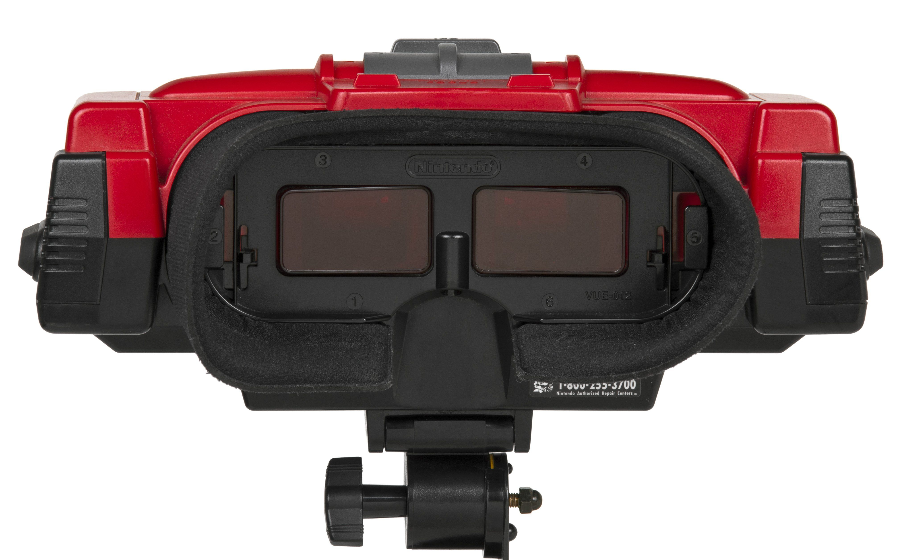
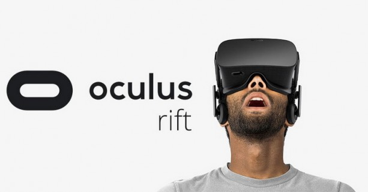
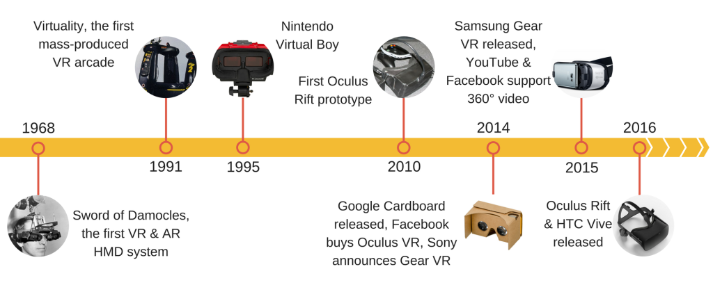
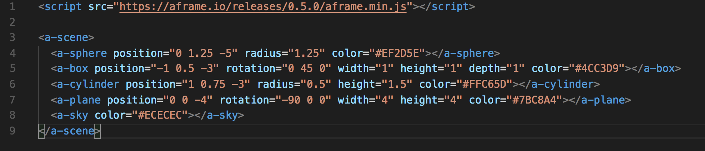

Devoxx France 2018
La toile en VR
Jonathan Barthelemy @jonathanbarthlm
Florent Berthelot @berthel350
Avant de commencer
La VR qu'est ce que c'est ?
1995 - Virtual boy
2007 - Google Street View
2014 - Facebook
LA VR, un nouvel enjeu
Que faut-il pour une expérience VR immersive ?
Que faut-il pour une expérience VR immersive ?
- Environnement 3D
Que faut-il pour une expérience VR immersive ?
- Environnement 3D
- Son en 3D
Que faut-il pour une expérience VR immersive ?
- Environnement 3D
- Son en 3D
- Des intéractions
La toile en 3D
<canvas></canvas>
WebGL
- Sorti le 3 mars 2011
- API Javascript dédiée à la 3D
- Utilise les éléments HTML5 canvas
- +20 frameworks ont vu le jour par la suite
Un cube avec WebGL
Three.JS !
- Produit des scènes 3D
- Simplifie les calculs matriciels
Un cube avec Three.JS
Des intéractions
Des intéractions
- Événements JS (accélération, orientation, ...)
Des intéractions
- Événements JS (accélération, orientation, ...)
- API Sensor
Web VR API

Des frameworks !
Des frameworks, orientés composants !
Des frameworks, orientés composants !
- A-Frame
- React-VR
React-VR
Au départ React, un framework orientée composant
React-VR
... puis react-native, exit le html vive les composants mobiles
React-VR
Et enfin react-VR, les composants produisent du three.js + web VR API
Démo de React VR
A-frame
Framework open-source dédié à la 3D, développé par Mozilla et sorti en 2015
A-Frame - Les avantages
- Ne nécessite pas de connaissances profondes en Javascript pour démarrer
- S’intègre avec n’importe quelle librairie ou framework, tout se passe côté HTML
Une première scène avec A-Frame

Demo de A-Frame
Et le son ?
Et le son ?
Web Audio API
Démo sonore
Nous ne sommes pas des designers !
Et les intéractions ?
Les déplacements ?
Le debug
Compatibilité WebVR API
- Mozilla Firefox
- Chrome derrière un flag
Take Away
- Uniformisation par le Web
Take Away
- Uniformisation par le Web
- Améliore le coté immersif d'un site web
Take Away
- Uniformisation par le Web
- Améliore le coté immersif d'un site web
- Incompatible avec le SEO
Take Away
- Uniformisation par le Web
- Améliore le coté immersif d'un site web
- Incompatible avec le SEO
- Intégration avec un site existant difficile
Merci !
Et merci également à Samy Benyoub (le stagiaire) et Justine Gaudin (Design)
Demos !
#DevoxxFR @berthel350 @jonathanbarthlm